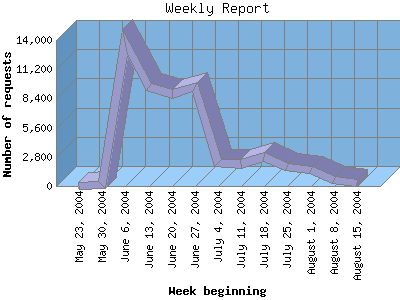

NPS Internet Solutions, Inc.
NPS Internet Solutions, Inc.
The Weekly Report identifies the activity for each week within the report
time frame. Remember that one page hit can result in several server requests
as the images for each page are loaded.
Note: Depending on the
report time frame for this report the first and last week may not represent
a full seven day week, resulting in lower hits.

| Week beginning | Number of requests | Number of page requests | Number of bytes transferred | |
|---|---|---|---|---|
| 1. | May 23, 2004 | 1 | 1 | 1.207 KB |
| 2. | May 30, 2004 | 90 | 6 | 5.297 MB |
| 3. | June 6, 2004 | 13,815 | 929 | 2.108 GB |
| 4. | June 13, 2004 | 9,491 | 573 | 1.075 GB |
| 5. | June 20, 2004 | 8,867 | 545 | 1.122 GB |
| 6. | June 27, 2004 | 9,485 | 1,083 | 1.028 GB |
| 7. | July 4, 2004 | 2,240 | 502 | 148.036 MB |
| 8. | July 11, 2004 | 2,126 | 333 | 210.827 MB |
| 9. | July 18, 2004 | 2,766 | 399 | 289.589 MB |
| 10. | July 25, 2004 | 1,799 | 281 | 215.198 MB |
| 11. | August 1, 2004 | 1,504 | 296 | 136.273 MB |
| 12. | August 8, 2004 | 537 | 169 | 44.251 MB |
| 13. | August 15, 2004 | 259 | 82 | 7.418 MB |
Most active week beginning June 27, 2004 : 1,083 pages sent. 2,263,559,106.00 served. 13,815 requests handled.
Weekly average: 399 pages sent. 501.347 MB served. 4,075 requests handled.
This report was generated on August 16, 2004 03:59.
Report time frame December 30, 2003 01:23 to August 16, 2004 09:47.
| Web statistics report powered by: | |
|
NPS Internet Solutions, Inc.
|
|
| Web statistics report produced by: analog 5.32 / Report Magic 2.21 |